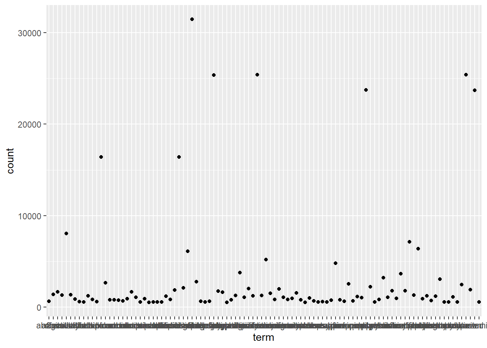
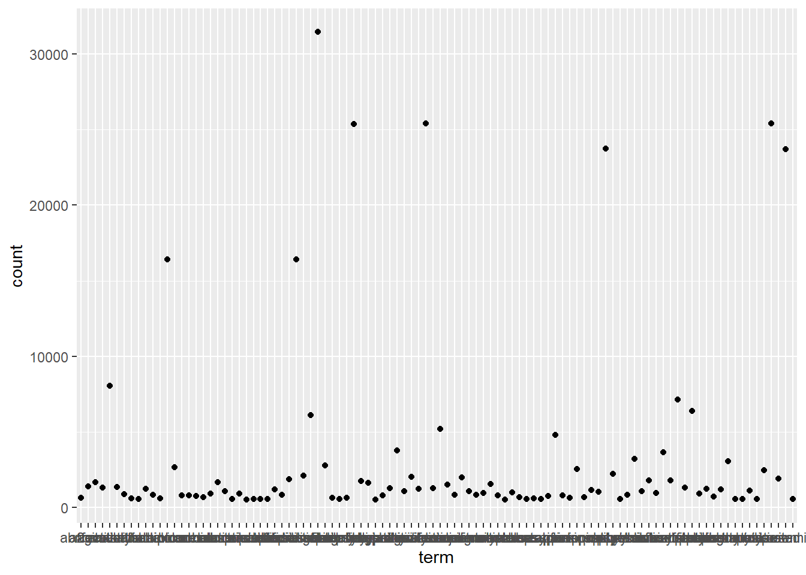

Chapter 5 Learning
According to the published data from the U.S. Food and Drug Administration (FDA), there are ShinyAPP openFDA.
5.1 Why learn at all?
With increasing experience on CTAs or INDs, there may be associations between “success” metrics and certain formal characteristics of application materials. According to BfArM there are 3,647 applicatioin for 2014-2018,

Please refer directly to source of origin. BfArM 2019

Please refer directly to source of origin. Pei 2019
5.1.1 Limitations
This kind of data is from grey literature. Although the data is scraped from the web, it can be seen as an “official” release by federal institutions. However, no API is available and the scope and breadth of the data is very limited which severely hampers knowledge from past experience.
5.2 What to learn first?
5.3 How to learn best?
 

This book is in Open Review. I want your feedback to make the book better for you and other readers. To add your annotation, select some text and then click the on the pop-up menu. To see the annotations of others, click the in the upper right hand corner of the page